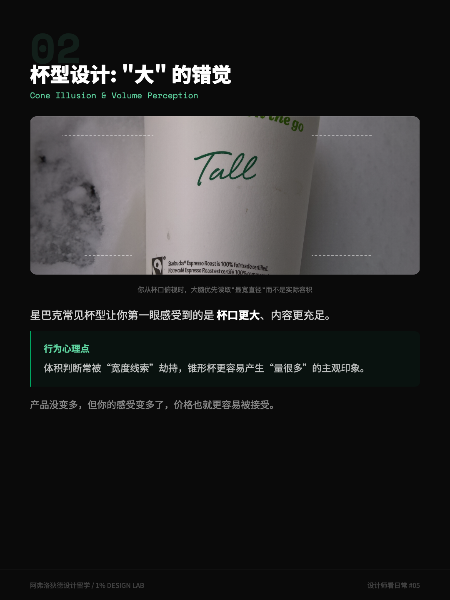
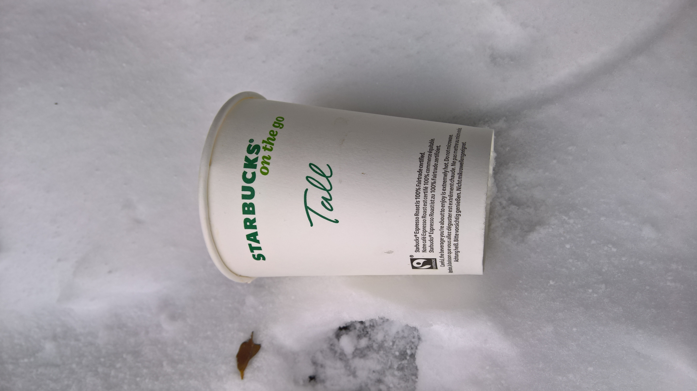
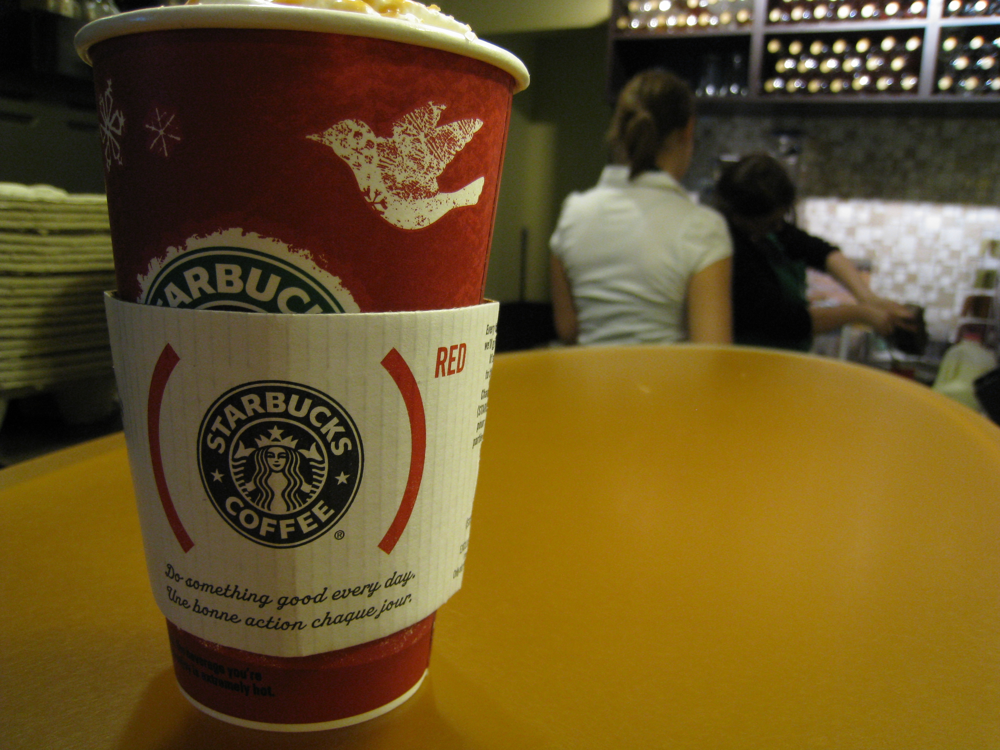
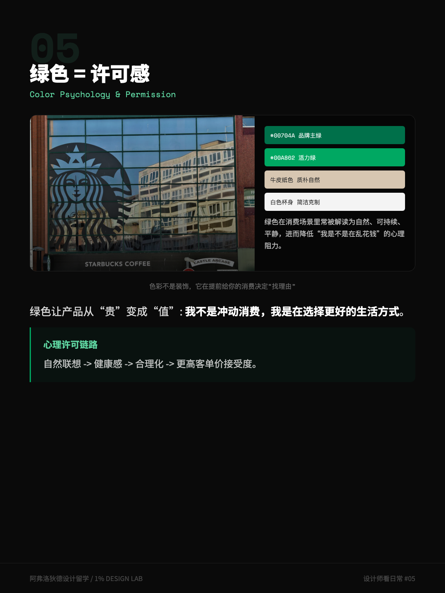

Start with something happening right now. A few days before I wrote this, I opened Google Trends to scout topics, as I usually do, typed in "starbucks," and watched which related queries were climbing. The fastest-rising string was "bear cup," "bearista cup," "teddy bear cup," and the biggest gain reached +21,900%. I stared at that number for several seconds. Translated: Starbucks' Bearista cup has been snapped up yet again, and the whole world is searching for it. "Yet again" is exactly the right word here. This is not its first sellout.
A cup. Queues at the stores, the app crashing, scalpers marking it up threefold. Call it marketing; fair. But marketing can't explain why the thing that gets cleared out is always the cup, and never coffee vouchers or co-branded T-shirts. And by now it has become a fixture: the annual cup carnival.
My answer: the cup is the item on Starbucks' product line that sits closest to perceived-value design. Today I'm taking it apart, four mechanisms, all hidden on the paper cup in your hand. The numbers circulating online get a pass through the sieve too.
Don't ask "why is Starbucks expensive." What you should ask is something else: from the second your hand touches the cup, what four things does it do so that you convince yourself?
1. The taper: an illusion of more
Take a Starbucks cup and a same-capacity coffee from another brand and set them side by side. The Starbucks cup has an unremarkable signature: wide at the top, narrow at the bottom, a gentle taper. Most fast-food brands' cups run close to a straight cylinder. You don't need to measure the difference; the naked eye is enough.
The taper's effect sits at the level of perception. People's judgment of volume leans heavily on the widest diameter, not on the computed actual capacity. That one glance, holding the cup and looking down from the top, reads a big rim, and the brain hands you the verdict straight: quite a lot. The actual capacity isn't far off a straight cup.
Tapered cups are common across the drinks industry; they're hardly a Starbucks invention. The extra step Starbucks takes is stacking the taper on top of the "Grande, Venti" naming system, so the visuals hand you more first and the naming hands you the hint of an upgrade. Two sets of signals reinforcing each other make the denominator on that $6 much less glaring. What's printed on the cup is capacity; what you weigh in your head is a feeling.
Fact-check: The internet circulates precise numbers like "Starbucks cup walls are 30% thicker than ordinary paper cups." As usual, I went looking for the source. Didn't find one. The perceptual tendency to estimate volume by the widest diameter is genuinely discussed in perception psychology; as for precision down to a 30% figure, treat it as something the retellings processed in.


2. Touch: your hand prices the drink
The second mechanism sits at your fingertips. Pick up a Starbucks cup and there are a few tangible details: the wall runs thick, so it doesn't feel flimsy in your grip; the sleeve carries an embossed texture your thumb can read; the lid clicks shut with one crisp snap.
Each detail drives one channel of judgment. Thick equals solid, texture equals care, and that click of the lid equals sealed. Seen alone, each one is too small to be worth mentioning. Stacked together, your hand has submitted a quality assessment in the seconds before you pay, a process too fast for you to notice it happened. The report is never written down; the speed you pull out your money is the conclusion.
The product world has given this a name: haptic branding, encoding brand information into material and feel. You can't see it, but you read it every time you hold the cup.
One counterexample makes it clear. Pour the same coffee into a soft, thin, badly sealing cup: the taste hasn't changed, but the sense of price tier collapses on the spot. The product didn't change, the perception did, and that is this mechanism's mechanical advantage. The soft cup never touched the coffee one bit; everything it changed was your estimate of what the coffee is worth.
3. The handwritten name: a marker worth pennies
The third move is the cheapest and the smartest: hand-writing your name on the cup. This step's error rate is famous far beyond its niche; cups with mangled names are a permanent fixture on social media, and plenty of people have scrolled past one.
Look at it from the other side. A standardized global chain, product manuals timed to the second, deliberately keeps a handwritten step with a sky-high error rate? Because that step buys three things at once. First is ownership: on an assembly-line product, your name is the only variable. Second is conversation: spelled wrong, you photograph it and post it, and the brand gets free distribution; spelled right, you get a light little moment of being remembered. Third is the soothing of waiting: at peak hours a drink takes three to five minutes, and once the name is on the cup, anxiety turns into anticipation. Three things, one marker, bought in a single stroke.
A marker costs a few cents. This is one of the highest-yield pieces of service design I know of.
The Bearista cup is this logic in physical, enlarged form. A name printed on the body, a bear held in your hand: the two experiences do the same job, turning a standardized product into something that concerns you. That +21,900% curve on Google Trends is the reading this logic gives off when it runs through.

4. The green: a permission slip, maybe
Finally, the green. Why green, and not the red and yellow fast food loves most?
The popular explanation is color psychology: green maps to nature, health, and calm, while red and yellow map to urgency and cheapness. Green hands the purchase a permission slip, "I'm not wasting money, I'm living a life with some quality." Nobody says this out loud; everyone runs it through their head on their own behalf.
Here I have to be honest: the popular version of color psychology rests on far thinner evidence than the legend claims. There is real research on the links between color and emotion, but the findings are generally diluted by culture, context, and comparison conditions, and not much is left standing. The part I believe: in a fast-food color field ruled by red and yellow, green provides a clear category separation, letting you tell at a glance from the street corner which kind of purchase this is. Whether it directly manufactures the permission slip, please hold your judgment.
What actually nails down the permission is the space: wood tables, warm light, sofas you can sit in all afternoon. The green logo is only the cover of that spatial experience. Apple uses a whole glass wall to lower your resistance to walking in; Starbucks uses a full third-place experience to lower your psychological resistance to paying. The two companies are doing the same job: getting you to walk in and pay this price without first having to persuade yourself.

5. Perceived value isn't deception
With the four mechanisms taken apart, a word on design ethics.
These techniques share ancestry with the casino set; as I mentioned in the casino piece, Starbucks' stored-value card is a cousin of chip demonetization. The two have one key difference: the casino dilutes your perception of loss, Starbucks amplifies your perception of what you gained. The former's direction is keeping you unaware you're losing; the latter's is making you feel that what you bought deserves the price. One does subtraction in a place you can't see; the other does addition in a place you can.
As a designer, the most important lesson I take from this system runs the other way. Many good products die of perceived value sitting below actual value: the team pours its craft into the product, and the user can't touch it, can't see it, can't feel it. That can't be blamed on the user; it's unfinished design. Translating real value into perceivable signals, thickness, texture, sound, a name, a color, and carrying it to the user's hand, only the part that can be touched and seen counts. My name for this is translation, not whitewash.
Next time the bear cup drops, you'll still go queue, and so, probably, will I. At least while you're in line you'll know what you're buying: a coffee, plus a cup that persuades you on your own behalf.
Four perception checks for your next coffee
- Read the shape. Is it tapered? Can you estimate the volume without the menu? Most people overestimate.
- Feel the wall. Close your eyes for five seconds. Thickness, texture, the snap of the lid — which one is pricing this drink for you?
- Find the variable. On this standardized product, what belongs only to you? A name, a sticker, a hand-scrawled order number?
- Ask one question. If you swapped it for a disposable transparent cup, would you still be willing to pay this price? The gap is the persuading the cup does for the brand.
Four checks later, the cup in your hand doubles as a perceived-value lesson, tuition five yuan.
- Widely circulated figures, "raw materials cost about 5 yuan" and "cup walls 30% thicker," could not be traced to primary sources and are flagged as unverified in the text; the perceptual tendency to estimate volume by the widest diameter and the evidence limits of color psychology are also stated, honestly narrowed, at the level that can be verified. Take the directions as reference; discount the precision.
- The +21,900% rise of "starbucks bear cup"-related queries is the author's own Google Trends check (US region, rising queries, 12-month window, August 2026)
- Two photos come from Wikimedia Commons: the red cup by Mack Male (CC BY-SA 2.0); the takeaway cup by Donald Trung Quoc Don (CC BY-SA 4.0), credited here as the licenses require.
- Haptic branding and the "third place" concept are publicly discussed in brand and space design; the four-part framework in this piece is the author's own reading
- Illustrations are original cards from the author's "designer looks at daily life" series. This piece is not investment advice and not a verdict on any brand; it just borrows one paper cup to take perceived-value design apart.